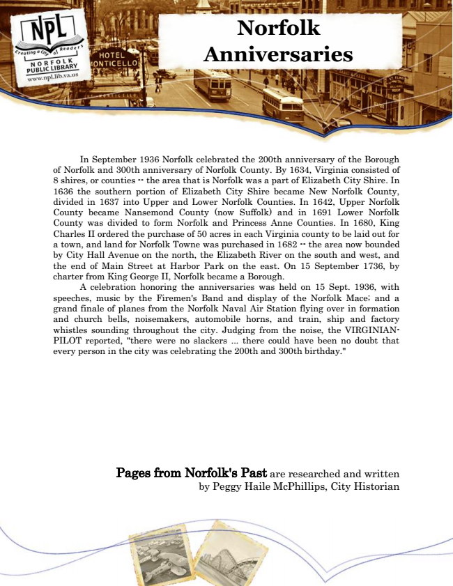

Norfolk Anniversaries
In September 1936 Norfolk celebrated the 200th anniversary of the Borough of Norfolk and 300th anniversary of Norfolk County. By 1634, Virginia consisted of 8 shires, or counties -- the area that is Norfolk was a part of Elizabeth City Shire. In 1636 the southern portion of Elizabeth City Shire became New Norfolk County, divided in 1637 into Upper and Lower Norfolk Counties. In 1642, Upper Norfolk County became Nansemond County (now Suffolk) and in 1691 Lower Norfolk County was divided to form Norfolk and Princess Anne Counties. In 1680, King Charles II ordered the purchase of 50 acres in each Virginia county to be laid out for a town, and land for Norfolk Towne was purchased in 1682 -- the area now bounded by City Hall Avenue on the north, the Elizabeth River on the south and west, and the end of Main Street at Harbor Park on the east. On 15 September 1736, by charter from King George II, Norfolk became a Borough.
A celebration honoring the anniversaries was held on 15 Sept. 1936, with speeches, music by the Firemen's Band and display of the Norfolk Mace; and a grand finale of planes from the Norfolk Naval Air Station flying over in formation and church bells, noisemakers, automobile horns, and train, ship and factory whistles sounding throughout the city. Judging from the noise, the VIRGINIAN- PILOT reported, "there were no slackers ... there could have been no doubt that every person in the city was celebrating the 200th and 300th birthday."
Pages from Norfolk's Past are researched and written by Peggy Haile McPhillips, City Historian